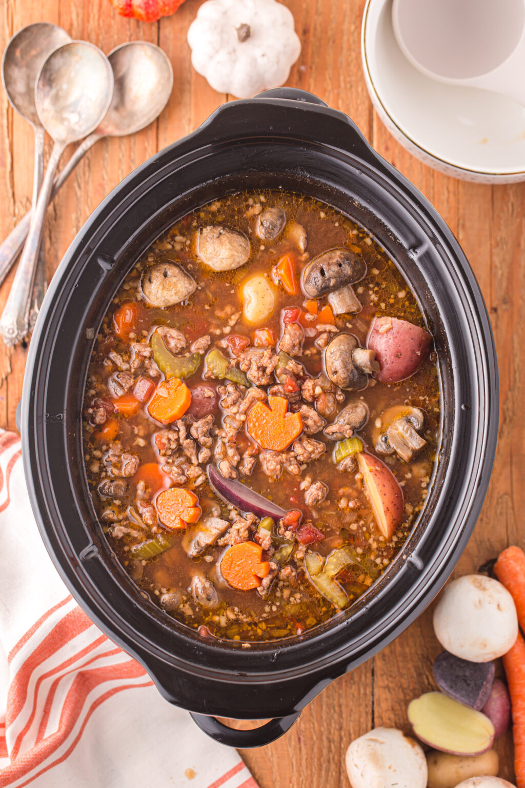

witches' stew

description
ingredients
- 3lbs beef round steak, cubed
- 3 tbs butter
- salt and pepper, as much as you feel so inclined
- 2 tbs flour
- 16 oz. beef broth
- 2 cups red wine
- 8 oz. can tomato sauce
- 2 tbs worcestershire sauce
- 6 medium potatoes, peeled and quatered
- 6 - 8 carrots, chopped
- 6 - 8 celery stalks, chopped
- 1 large onion, diced
- 10 - 12 sliced mushrooms
- 2 cloves of garlic, pressed
- 2 tsp. thyme
- 2-3 sprigs rosemary
optional ingredients
- fresh parsley
- bacon bits
- loaf of crusty bread
steps
- in a dutch oven over medium heat, brown beef in butter with salt and pepper to taste.
- when all sides are browned, add flour, stirring until the beef is nice and fully coated.
- add beef broth, wine,tomato sauce, and worcestershire sauce. cover and let it simmer for an hour.
- add the rest of the ingredients, and more wine if you'd like a richer flavor.
- let it simmer for another 1.5 hours.
- remove rosemary stems and serve with fresh parsley, bacon bits, and some crusty bread.